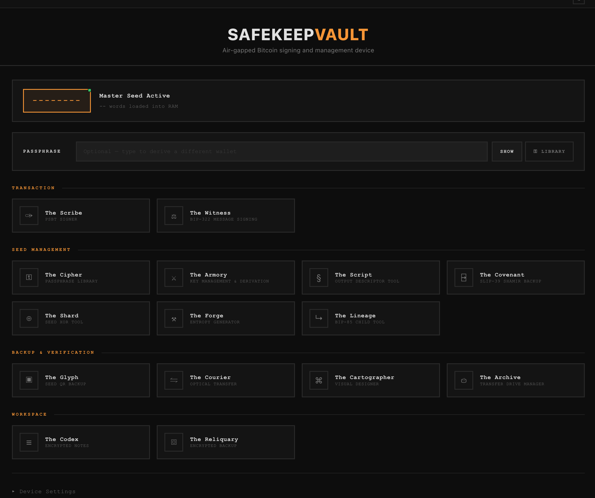

Introducing SafeKeepVault
Your Hardware. Your Keys. Your Bitcoin.
Air-gapped Bitcoin signing · Zero cost of entry · Free & open-source
Boot any x86-based laptop or desktop from a USB thumb drive and SafeKeepVault turns it into a dedicated, air-gapped Bitcoin signing environment. Run it stateless for a zero-footprint session, or unlock password-protected encrypted storage for persistent key management — all on open standards, auditable code, and nothing phoning home.
Whether you are signing single-signature transactions, coordinating a 2-of-3 multisig quorum, transferring PSBTs via QR code, or generating offline backups, SafeKeepVault speaks the same standards and formats as the tools you already use. No tracking, no telemetry, and no cloud. Just open-source math on hardware you already own.
Repurpose, Don't Replace
Proprietary hardware wallets often force you to trust tiny screens and cramped interfaces. SafeKeepVault transforms your offline PC into a high-resolution signing station where every derivation path, master fingerprint, and PSBT detail is legible and verifiable.
By utilizing the full-size display and keyboard of your own hardware, you eliminate the “peep-hole” security risk of small devices. It turns dormant silicon into a professional-grade audit environment for your most critical transactions.
- 4 GB USB thumb drive or greater — any x86_64 laptop or desktop
- No access to SSD or networking services — peripherals locked out after boot
- Strong password-based encrypted storage, unlockable with a QR code on your phone
Security isn’t about the hardware; it’s about the environment. SafeKeepVault bypasses your vulnerable Windows or macOS installation entirely, booting into a stripped-down, read-only Linux environment designed for maximum isolation. By locking down the networking stack and isolating your keys from your physical hard drive, we create a secure “air-gap” within the machine itself.
You can watch the vault work via our live system monitor, ensuring every process is accounted for. Unlock the password-protected encrypted volume to persist your keys across sessions, secured at rest and never written to the host machine. Or run it stateless and the moment you pull the plug, the entire session is wiped from memory — no traces on the disk, no breadcrumbs for attackers. Either way, you get the isolation of a dedicated hardware wallet with the transparency and power of a full-scale computer.

Everything You Need. Nothing You Don't.
- 15 tools Generate seeds, sign PSBTs, split backups with Shamir or XOR, derive child keys, export descriptors, and hand down inheritance instructions — the full Bitcoin key lifecycle in one place.
- Works with your wallet Pairs as an offline signer with Sparrow and Electrum on desktop, and Nunchuk and Blue Wallet on mobile. Set up watch-only, sign air-gapped, broadcast from the wallet you already trust.
- Stateless or persistent Boot into a zero-footprint amnesic session, or unlock password-protected encrypted storage for persistent key management. The same drive does both — your choice at every boot.
- True air-gap Transfer PSBTs and signed transactions via QR code using the built-in Courier tool — no shared USB drive, no online bridge, no exceptions.
- Free forever MIT licensed, fully open-source, and auditable by anyone. No subscription, no hardware to buy, no telemetry. Flash a USB stick and you're sovereign.